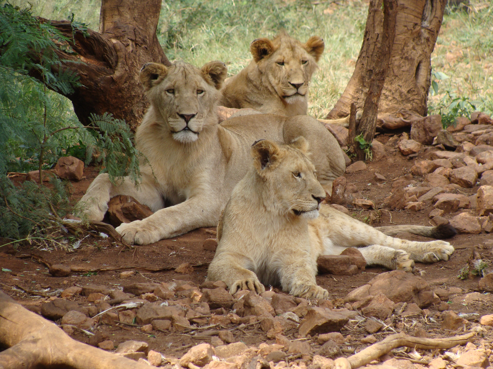

Scurt istoric
În 1929 s-a deschis în pădurea Dumbrava prima Grădină Zoologică din
România de către Uzina Electrică Sibiu la iniţiativa inginerului
Szekely căruia i-a venit ideea după ce a găsit nişte vulpi pe când
efectua lucrări de reparaţii la barajul de la Sadu. După înfiinţare,
Grădinii Zoologice i-au fost donate mai multe animale şi păsări, cum
ar fi o pisică sălbatică, o lupoaică donată de Obert von Spiess din
partea Regelui, un lup donat de Asociaţia “Şoimii”, un vultur, un
cerb carpatin donat de vânătorii din Talmacel, mistreţi etc. În 1930
a fost donat primul urs. De menţionat stejarul de la intrarea în
grădină, bătrân de peste 600 de ani.


Ce mai e nou
Grădina Zoologică Sibiu se întinde pe o suprafaţă de aproximativ 20
hectare. Începand cu anul 2006 atât adăposturile animalelor cât și
infrastructura grădinii au fost supuse unor ample procese de
reabilitare și modernizare. Totodată s-a reînoit parcul de
ambarcațiuni (bărci și hidrobiciclete) iar pentru cei mici s-a
amenajat un loc de joacă . Grădina adăposteşte 268 animale şi păsări
din 63 de specii: maimuţe, urşi, lupi albi, tigri, lei, jaguari, lame,
cerbi carpatini, căprioare, bivoli albi, ponei, pitoni, crocodili,
fazani, papagali, păuni, porumbei, cămile, zebre, struți, canguri.
Odată ce s-au finalizat noile amenajări pentru spaţiile destinate
animalelor, numărul de vizitatori a început să crească. Astfel, dacă
în 2007 grădina a fost vizitată de 80.000 de persoane, numărul
acestora a crescut la 244.878 în anul 2015 si a continuat sa creasca
la peste 390.000 în anul 2019.
Te initam sa urmaresti atractiile noastre principale!